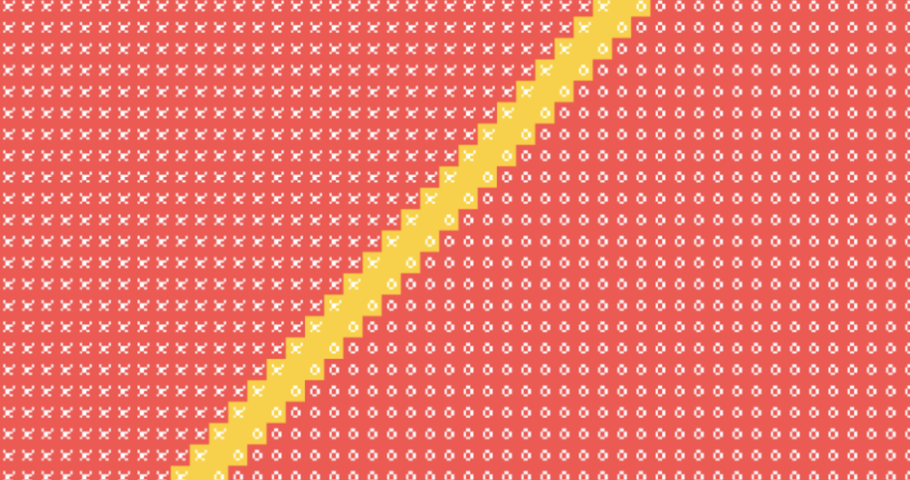

Interesting Behaviors
There are some interesting behaviors that happened due to the transition function I devised for each state and for each situation.
These behaviors weren't planned, but they made some semblance of sense and were interesting and difficult to construct.
| Behavior Name | Behavior Description | Representation in simulation |
|---|---|---|
| Scout Cells | Due to the strange transition function related to the synthesis of frontline cells, there is a gap betweeen cells. As a result of this "weak" frontline, I came up with the term "scout cells" due to the fact that they are separated from the rest of the armies, and are unwilling to cooperate to actually form soemthing that looks strong. |
|
| No Man's Land Cells | These cells are cells that are "factionless" - that is, they do not have an X or an O on them. They are caused by an equal number of X's and O's, simulating a war in which both sides are evenly matched, leading to a No Man's Land situation where no army can cross. | 
|
| Points of Skirmish | These are not cells, they're rather an interesting loop that repeats indefinitely. When there are too many neighboring enemy frontier cells, the frontier cells of one side die off. However, the supply cells revive the frontier cells. This sudden revival causes the enemy frontier cells to die off, but their supply cells revive them. This creates a loop in which nobody wins, leading to a skirmish point. A skirmish point can be in one spot or along the entire borderline. One spot would be just a skirmish point, along the border would be a war. |
|